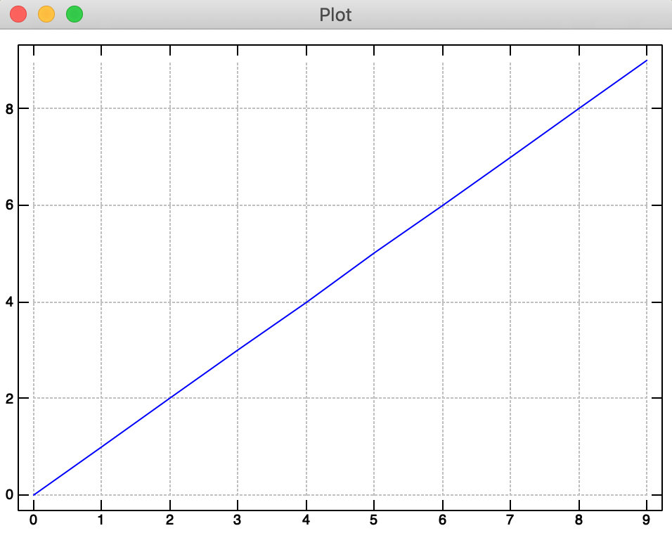
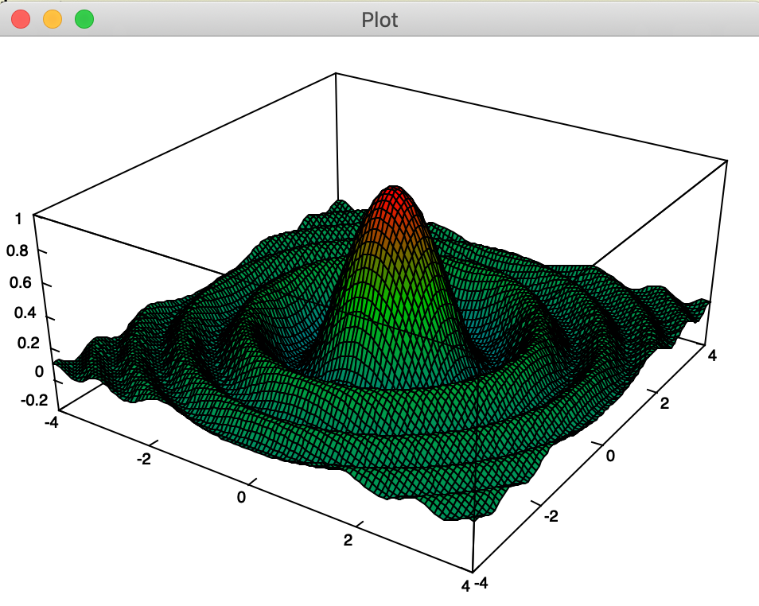
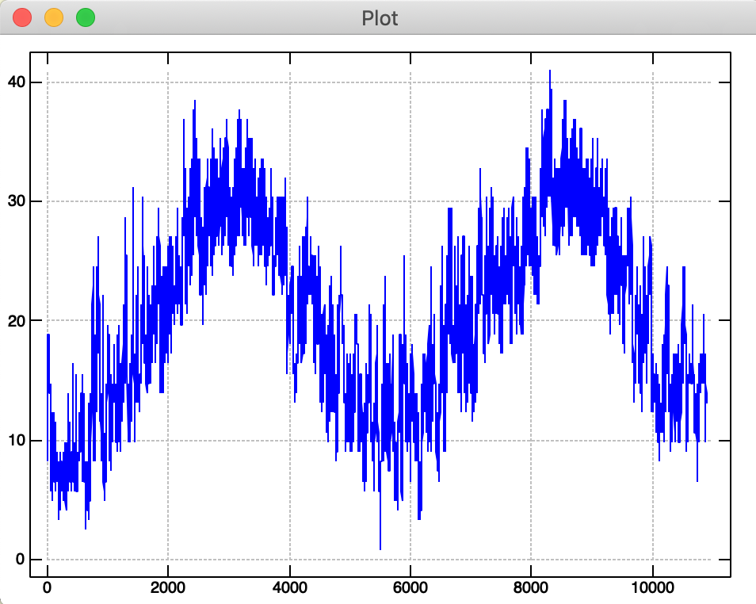
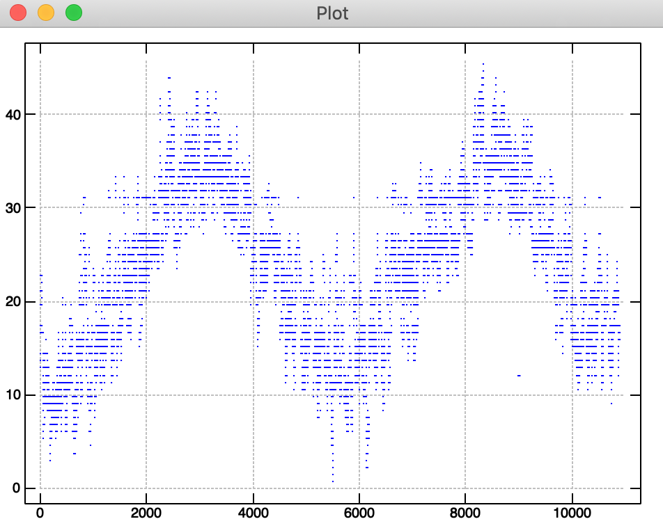
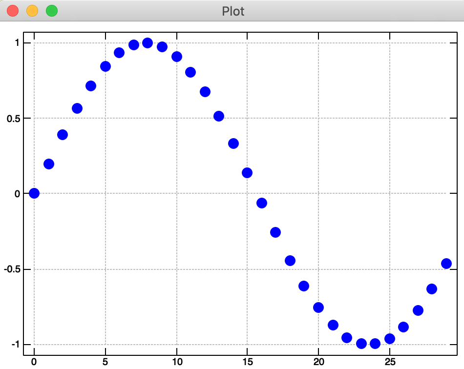
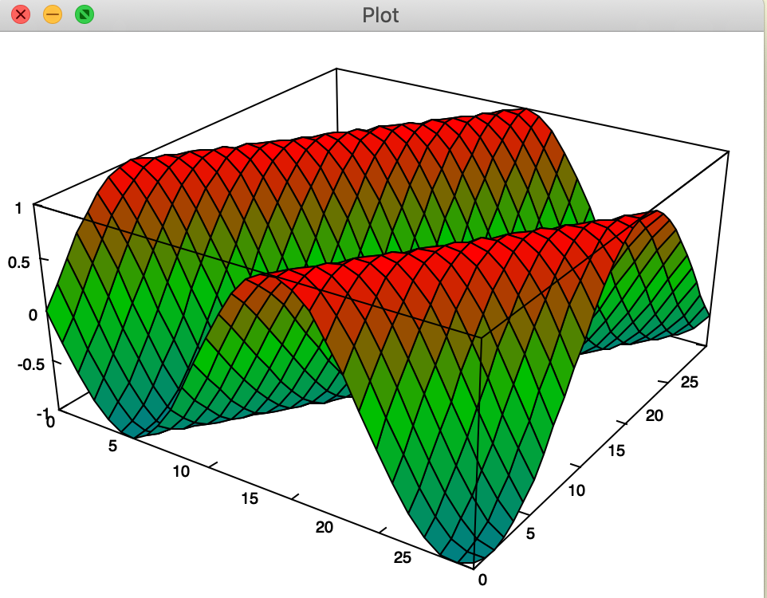

First Plot in J
When first learning a new language, I have a simple heuristic test I call
time to first plot
It is a silly test when you really think about it. I mean, in the limit, you could write a DSL where time to first plot is essentially the same amount of time it takes to load the interpreter or compile.
But, its somewhat useful nonetheless.
Let's get started with one of my favorite languages. J
J is a high-level, general-purpose programming language that is particularly suited to the mathematical, statistical, and logical analysis of data. It is a powerful tool for developing algorithms and exploring problems that are not already well understood.
J is commonly used by bitflipping wizards in Code Golf or project euler. At first, this functional interpreted array processing languages looks like line noise.
+/ ". "0 ": !1000x
That simple line calculates the sum of the digits of 1000 factorial (which is 10539 for the curious). It does it in a fraction of a second, and with a low memory footprint. It's awesome.
In the next several posts, we'll cover lots of J goodness, but for now, plotting.
In J, its phenomenally easy to get started with plotting.
load 'plot'
plot i.10
We can also plot a cool sombrero function
load 'trig'
f=: 4 : '(cos r) % 1 + r =. x +&:*: y'
plot _4 4 100 ; _4 4 100 ; 'f'
Now, as neat as that is, its not what I would call data science. What we really want to do is read in a csv of data. Which we do below and look at the {. head of the array which contains our column names.
load 'csv'
df =: readcsv './bike-sharing-demand/train.csv'
{. df
┌────────┬──────┬───────┬──────────┬───────┬────┬─────┬────────┬─────────┬──────┬──────────┬─────┐
│datetime│season│holiday│workingday│weather│temp│atemp│humidity│windspeed│casual│registered│count│
└────────┴──────┴───────┴──────────┴───────┴────┴─────┴────────┴─────────┴──────┴──────────┴─────┘
We then take the 5th column "temp" 5 {" df and peel off the label by de-heading the list }.. We convert to numeric data and plot the temperature.
plot makenum }. 5 {"1 df

In data science work, however, its often useful (and visually pleasing) to make basic scatter plots. That, unfortunately, is not quite as easy in J. You have to define a verb * =: 3: 0 and using the value passed to it y define various parameters for the plot.
So, if you wanted to then plot the apparent temperature from the sixth column, you would first define a scatter plot verb
plt_val =: 3 : 0
pd 'reset'
pd 'pensize 1;type point'
pd < y
pd 'show'
)
Which we then immediately apply in place of the plot function to the 6th column. (remember, J sentences read from right to left)
In general, we see that plotting (and reading basic data files) is quite simple in J. The odd syntax takes some getting used to, but its lightning fast and sure to annoy your co-workers when they try to read your code.
Edit: Nov 22, 2019
I figured out a better way to plot surfaces and scatter plots. If you simply use 'quick' plot semantics.
'pensize 5; type point' plot sin 0.2*i.30
'surface' plot sin 0.2 * i.30 30